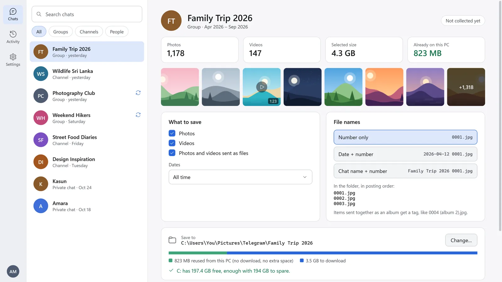
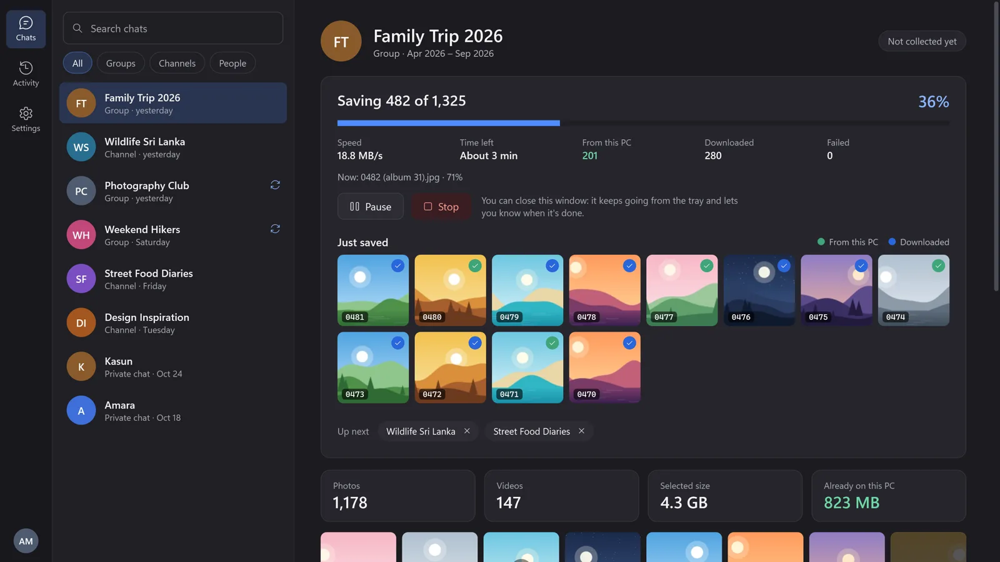
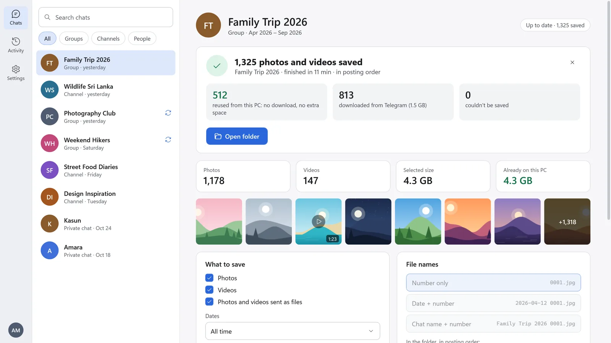
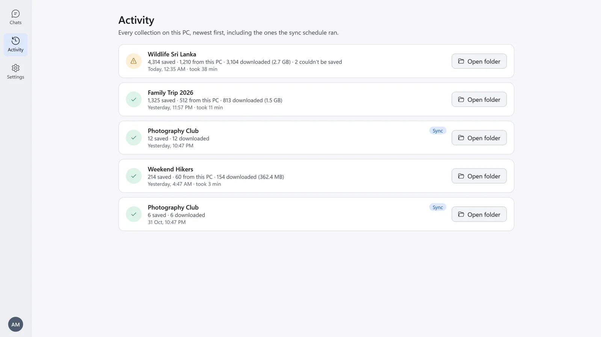

Telegram keeps a chat's media scattered
Photos and videos end up in the app's cache, split by type, under names that mean nothing. Chat Media Collector puts them back together, one folder per chat, in the order they were posted.
Before: the cache
Spread across folders, with no order you can follow.
…\videos\5301172984.mp4
…\documents\IMG_4471.JPG
…\photos\4986623010_w.jpg
After: Pictures\Telegram\Family Trip 2026
Numbered in posting order. Photos sent as an album stay together.
0002.mp4
0003 (album 2).jpg
0004 (album 2).jpg
How it works
See what's in a chat before you start
Pick a chat or channel and see how many photos and videos it has, how big they are, and how much is already on your PC.
- Choose photos, videos, files, or all of them
- All time, or just recent months
- Three name styles: number, date + number, or chat name + number

Reuses what Unigram already downloaded
If you use Unigram, photos and videos it already has are linked into the folder instead of downloaded again, so they take no extra space on your drive.
- Runs in the background: pause, stop and carry on later
- Queue several chats
- Close the window and it keeps going from the tray

One folder per chat, in posting order
Every file gets the next number, so the folder reads like the chat. Run it again later and only the new posts are added, with the numbers that come next.

Keep chats in sync
Turn on sync for a chat and new photos and videos are added to its folder on a schedule. Every collection, including scheduled ones, is listed in Activity.

QR code sign-in
Scan it from Telegram on your phone, or use your phone number.
Private
No servers, no tracking. Your sign-in and media stay on your PC.
Light or dark
Pick a theme or follow Windows.
Starts with Windows
Optional, so syncs run without opening the app.
Questions
Is this an official Telegram app?
No. Chat Media Collector is an unofficial app. It isn't made by or affiliated with Telegram. It signs in through Telegram's public API, like other third-party Telegram apps.
Is my Telegram sign-in safe?
You sign in directly with Telegram, using a QR code or your phone number. The session is saved encrypted on your PC, and nothing is sent to the app's publisher: there are no servers. You can end the session any time from Telegram on your phone (Settings → Devices). See the privacy policy.
Do I need Unigram?
No. Without Unigram, everything is downloaded from Telegram. With Unigram, files it already downloaded are reused so they aren't downloaded twice.
How is this different from Telegram Desktop's "Export chat history"?
The export is a one-off copy, split into folders by type. Chat Media Collector keeps one folder per chat, numbered in posting order, adds only new posts on later runs, and can keep chats in sync on a schedule.
Where do the files go?
To Pictures\Telegram\<chat name> by default. You can pick a different folder for each chat.
What happens when the trial ends?
The app stops collecting, and everything you saved stays saved. Buy it once in the Microsoft Store to keep collecting.
Which Windows versions does it run on?
Windows 10 version 1809 or later, and Windows 11, on 64-bit (x64) PCs.
Try it free for 7 days

Questions or problems? orbitfoxstudios@gmail.com